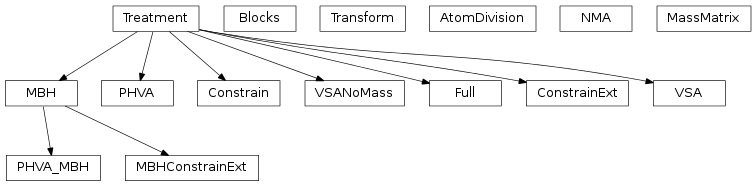

3. Normal mode analysis¶
3.1. The different NMA models¶
Inheritance diagram

A normal mode analysis is carried out by constructing an NMA object. The first argument is a molecule object created by one of the IO routines in tamkin.io.
>>> nma = NMA(molecule)
This leads to a standard normal mode analysis in 3*N degrees of freedom. The results, including those relevant for the construction of the molecular partition function, are stored as attributes of the NMA object. For example:
>>> print nma.freqs
prints the frequencies of the normal modes. Note that all data is stored in atomic units and that the freqs array contains really frequencies, not wavenumbers. If you want to print the wavenumbers in cm**-1, use the unit conversion constants from the molmod package:
>>> from molmod import centimeter, lightspeed
>>> invcm = lightspeed/centimeter
>>> print nma.freqs/invcm
One can also use modified schemes by giving a second argument to the NMA constructor. The following example computes the normal modes in 3*N-6 degrees of freedom:
>>> nma = NMA(molecule, ConstrainExt())
The second argument is an instance of a class that derives from the Treatment class. Other treatments include: Full (the default), PHVA, VSA, VSANoMass, MBH, PHVA_MBH, Constrain, and MBHConstrainExt.
- class tamkin.nma.NMA(molecule, treatment=None, do_modes=True)¶
Bases: object
A generic normal mode analysis class.
This class gathers the functionality that is common between all types of NMA variations, i.e. computation of frequencies and modes, once the problem is transformed to reduced coordinates. The actual nature of the reduced coordinates is determined by the treatment argument.
- Arguments:
- molecule – a molecule object obtained from a routine in tamkin.io
- Optional arguments:
- treatment – an instance of a Treatment subclass [default=Full()]do_modes – When False, only the frequencies are computed. When True, also the normal modes are computed. [default=True]
- Referenced attributes of molecule:
- mass, masses, masses3, numbers, coordinates, inertia_tensor, multiplicity, symmetry_number, periodic, energy
- Extra attributes:
- freqs – array of frequenciesmodes – array of mass-weighted Cartesian modes (if do_modes is True). Each column corresponds to one mode. One has to divide a column the square root of the masses3 attribute to obtain the mode in non-mass-weighted coordinates.zeros – list of indices of zero frequencies
- classmethod read_from_file(filename)¶
Construct an NMA object from a previously saved checkpoint file
- Arguments:
- filename – the file to load from
Usage:
>>> nma = NMA.read_from_file("foo.chk")
- write_to_file(filename, fields='all')¶
Write the NMA results to a human-readable checkpoint file.
- Argument:
- filename – the file to write to
- Optional argument:
- fields – define the selection of attributes to be written to file. This is one of ‘all’ (all attributes), ‘modes’ (only attributes required for nmatools.py), or ‘partf’ (only attributes required for the construction of a partition function)
- class tamkin.nma.AtomDivision(transformed, free, fixed)¶
Bases: object
A division of atoms into transformed, free and fixed.
- Arguments:
- transformed – the atom indices of the atoms whose coordinates are transformed into non-Cartesian coordinates.free – the atom indices that are not transformed and retained as Cartesian coordinates in the new set of coordinatesfixed – the atoms that are not used for the new coordinates, i.e. their positions are constrained.
- class tamkin.nma.Transform(matrix, atom_division=None)¶
Bases: object
A clever transformation object. It is sparse when atom coordinates remain Cartesian in the reduced coordinates.
This object transforms small displacements (first order) in reduced internal coordinates (can be mass weighted) into plain Cartesian coordinates.
It is assumed that the reduced coordinates are always split into two parts (in order):
- the coordinates that are non-Cartesian
- the free coordinates that are Cartesian
- Arguments:
- matrix – the linear transformation from the transformed displacements to Cartesian coordinates.
- Optional argument
- atom_division – an AtomDivision instance, when not given all atom coordinates are transformed
- Attributes:
- matrix – see abovescalars – diagonal part of the linear transformation (only used with mass-weighted transformations)
- __call__(modes)¶
Transform small displacement vectors from new to Cartesian coordinates.
- Argument:
- modes – Small (mass-weighted) displacements (or modes) in internal coordinates (float numpy array with shape KxM, where K is the number of internal coordinates and M is the number of modes)
- Returns:
- Small non-mass-weighted displacements (or modes) in Cartesian coordinates (float numpy array with shape 3NxM, where N is the number of Cartesian coordinates and M is the number of modes)
Usage:
>>> transform = Transform(...) >>> modes_cartesian = transform(modes_internal)
- get_weighted()¶
Return True when the transform is already mass-weighted
- make_weighted(mass_matrix)¶
Include mass-weighting into the transformation.
The original transformation is from non-mass-weighted new coordinates to non-mass-weighted Cartesian coordinates and becomes a transform from mass-weighted new coordinates to non-mass-weighted Cartesian coordinates.
- Argument:
- mass_matrix – A MassMatrix instance for the new coordinates
- weighted¶
Return True when the transform is already mass-weighted
- class tamkin.nma.MassMatrix(*args)¶
Bases: object
A clever mass matrix object. It is sparse when atom coordinates remain Cartesian in the reduced coordinates.
- Arguments, if one is given and it is a two-dimensional matrix:
- mass_block – the mass matrix associated with the transformed coordinates
- Arguments, if one is given and it is a one-dimensional matrix:
- mass_diag – the diagonal of the mass matrix associated with the free atoms (each mass appears three times)
- Arguments, if two are given: ! Attention for order of arguments.
- mass_block – the mass matrix associated with the transformed coordinatesmass_diag – the diagonal of the mass matrix associated with the free atoms (each mass appears three times)
The mass of the fixed atoms does not really matter here.
- get_weighted_hessian(hessian)¶
- class tamkin.nma.Treatment¶
Bases: object
An abstract base class for the NMA treatments. Derived classes must override the __call__ function, or they have to override the individual compute_zeros and compute_hessian methods. Parameters specific for the treatment are passed to the constructor, see for example the PHVA implementation.
- __call__(molecule, do_modes)¶
Calls compute_hessian and compute_zeros (in order) with same arguments
- Arguments:
- molecule – a Molecule instancedo_modes – a boolean indicates whether the modes have to be computed
- compute_hessian(molecule, do_modes)¶
To be computed in derived classes
- Arguments:
- molecule – a Molecule instancedo_modes – a boolean indicates whether the modes have to be
Attributes to be computed:
- treatment.hessian_small: the Hessian in reduced coordinates
- treatment.mass_matrix_small: the mass matrix in reduced coordinates (see MassMatrix class)
- treatment.transform: (None if do_modes==False) the transformation from small displacements in reduced coordinates to small displacements in Cartesian coordinates. (see Transform class)
For the implementation of certain treatments, it is easier to produce a mass-weighted small Hessian immediately. In such cases, the transform is readily mass-weighted and mass_matrix_small is None.
- compute_zeros(molecule, do_modes)¶
To be computed in derived classes
- Arguments:
- molecule – a Molecule instancedo_modes – a boolean indicates whether the modes have to be
Attributes to be computed:
- treatment.num_zeros: the number of zero eigenvalues to expect
- treatment.external_basis: (None if do_modes=False) the basis of external degrees of freedom. number of basis vectors matches the number of zeros. These basis vectors are mass-weighted.
- class tamkin.nma.Full(im_threshold=1.0)¶
Bases: tamkin.nma.Treatment
A full vibrational analysis, without transforming to a new set of coordinates.
- Optional argument:
- im_threshold – Threshold for detection of deviations from linearity. When a moment of inertia is below this threshold, it is treated as a zero.
- compute_hessian(molecule, do_modes)¶
See Treatment.compute_hessian().
The Hessian is the full 3Nx3N Hessian matrix H. The mass matrix is the full 3Nx3N mass matrix M. It is assumed that the coordinates are Cartesian coordinates, so the mass matrix is diagonal.
- compute_zeros(molecule, do_modes)¶
See Treatment.compute_zeros().
The number of zeros should be:
- 3 for a single atom, nonperiodic calculation
- 5 for a linear molecule, nonperiodic calculation
- 6 for a nonlinear molecule, nonperiodic calculation
- 3 in periodic calculations
- class tamkin.nma.ConstrainExt(gradient_threshold=0.0001, im_threshold=1.0)¶
Bases: tamkin.nma.Treatment
Almost a full vibrational analysis, but with constrained external degrees of freedom.
Note that the current implementation only works correctly when the gradient is zero.
- Optional arguments:
- gradient_threshold – The maximum allowed value of the components of the Cartesian gradient in atomic units. When the threshold is exceeded, a ValueError is raised. [default=1-e4]im_threshold – Threshold for detection of deviations from linearity. When a moment of inertia is below this threshold, it is treated as a zero.
- compute_hessian(molecule, do_modes)¶
See Treatment.compute_hessian()
First a basis is constructed for the internal coordinates. The 3N-6 (or 3N-5) basis vectors of length 3N (matrix B is (3N-6)x3N) are mass-weighted. The ConstrainExt Hessian is then: B^T H B. This matrix is already mass weigthed, such that no ConstrainExt mass matrix needs to be specified.
- compute_zeros(molecule, do_modes)¶
See Treatment.compute_zeros().
The number of zeros is set to 0, because the global translations and rotations are already projected out.
- class tamkin.nma.PHVA(fixed, svd_threshold=1e-05)¶
Bases: tamkin.nma.Treatment
Perform the partial Hessian vibrational analysis.
Part of the system is fixed during the vibrational analysis: the fixed atoms are kept at their reference positions. The rest of the atoms can still vibrate.
See references:
- J.D. Head, Int. J. Quantum Chem. 65, 827 (1997)
- J.D. Head and Y. Shi, Int. J. Quantum Chem. 75, 81 (1999)
- J.D. Head, Int. J. Quantum Chem. 77, 350 (2000)
- Li and J. Jensen, Theor. Chem. Acc. 107, 211 (2002)
- Argument:
- fixed – a list with fixed atoms, counting starts from zero.
- Optional argument:
- svd_threshold – threshold for detection of deviations for linearity
- compute_hessian(molecule, do_modes)¶
See Treatment.compute_hessian().
The Hessian matrix for the PHVA is the submatrix of the full (3Nx3N) Hessian, corresponding with the non-fixed atoms: H_nonfixed. The mass matrix for the PHVA is the (diagonal) submatrix of the full (3Nx3N) mass matrix, corresponding with the non-fixed atoms: M_nonfixed. So it is a diagonal matrix with the masses of the non-fixed atoms on the diagonal.
- compute_zeros(molecule, do_modes)¶
See Treatment.compute_zeros().
This is a bit tricky. Most of the times the number of zero eigenvalues is zero, but there are a few exceptions. When there is one fixed point, there are in general three zeros. When there are two (or more colinear fixed atoms), there is in general one zero. When both the fixed and the free atoms are colinear, there are no zeros.
- class tamkin.nma.VSA(subs, svd_threshold=1e-05)¶
Bases: tamkin.nma.Treatment
Perform a Vibrational Subsystem Analysis.
Frequencies and modes are computed with the VSA approach, as described in the references:
- Zheng, B.R. Brooks, J. Biophys. 89, 167 (2006)
- H.L. Woodcock, W. Zheng, A. Ghysels, Y. Shao, J. Kong, B.R. Brooks, J. Chem. Phys. 129 (21), Art. No. 214109 (2008)
The system is partitioned into a subsystem and an environment. The subsystem atoms are allowed to vibrate, while the environment atoms follow the motions of the subsystem atoms. The environment atoms are force free.
- One argument:
- subs – a list with the subsystem atoms, counting starts from zero.
- Optional argument:
- svd_threshold – threshold for detection of deviations for linearity
- compute_hessian(molecule, do_modes)¶
See Treatment.compute_hessian().
The VSA Hessian reads: H_ss - H_se (H_ee)**(-1) H_es, the VSA mass matrix reads: M_s - H_se (H_ee)**(-1) M_e (H_ee)**(-1) H_es, where the indices s and e refer to the subsystem and environment atoms respectively.
- compute_zeros(molecule, do_modes)¶
See Treatment.compute_zeros().
The number of zeros should be:
- 3 for subsystem = a single atom, nonperiodic calculation
- 5 for subsystem = a linear molecule, nonperiodic calculation
- 6 for subsystem = a nonlinear molecule, nonperiodic calculation
- 3 in periodic calculations
- class tamkin.nma.VSANoMass(subs, svd_threshold=1e-05)¶
Bases: tamkin.nma.Treatment
Perform a Vibrational Subsystem Analysis, without taking into account the mass of the environment.
Frequencies and modes are computed as described in the reference:
- Zheng, B.R. Brooks, Journal of Biophysics 89, 167 (2006)
- A. Ghysels, V. Van Speybroeck, E. Pauwels, S. Catak, B.R. Brooks, D. Van Neck, M. Waroquier, Journal of Computational Chemistry 31 (5), 94-1007 (2010)
The system is partitioned into a subsystem and an environment. The subsystem atoms are allowed to vibrate, while the environment atoms follow the motions of the subsystem atoms. The environment atoms are force free. Moreover, the VSA is performed according to the original version of 2006: no mass correction for the environment is included. This version of VSA corresponds to the approximation of zero mass for all environment atoms.
- One argument:
- subs – a list with the subsystem atoms, counting starts from zero.
- Optional argument:
- svd_threshold – threshold for detection of deviations for linearity
- compute_hessian(molecule, do_modes)¶
See Treatment.compute_hessian().
The VSANoMass Hessian reads: H_ss - H_se (H_ee)**(-1) H_es. and the VSANoMass mass matrix reads: M_s, where the indices s and e refer to the subsystem and environment atoms respectively.
- compute_zeros(molecule, do_modes)¶
See Treatment.compute_zeros().
The number of zeros should be:
- 3 for subsystem = a single atom, nonperiodic calculation
- 5 for subsystem = a linear molecule, nonperiodic calculation
- 6 for subsystem = a nonlinear molecule, nonperiodic calculation
- 3 in periodic calculations
- class tamkin.nma.MBH(blocks, do_gradient_correction=True, svd_threshold=1e-05)¶
Bases: tamkin.nma.Treatment
The Mobile Block Hessian approach.
Frequencies and modes are computed with the MBH approach, as described in the refences:
- “Vibrational modes in partially optimized molecular systems”, An Ghysels, Dimitri Van Neck, Veronique Van Speybroeck, Toon Verstraelen and Michel Waroquier, Journal of Chemical Physics, Vol. 126 (22), Art. No. 224102, 2007, http://dx.doi.org/1.2737444
- “Cartesian formulation of the Mobile Block Hesian Approach to vibrational analysis in partially optimized systems”, An Ghysels, Dimitri Van Neck and Michel Waroquier, Journal of Chemical Physics, Vol. 127 (16), Art. No. 164108, 2007, http://dx.doi.org/1.2789429
- “Calculating reaction rates with partial Hessians: validation of the MBH approach”, An Ghysels, Veronique Van Speybroeck, Toon Verstraelen, Dimitri Van Neck and Michel Waroquier, Journal of Chemical Theory and Computation, Vol. 4 (4), 614-625, 2008, http://dx.doi.org/ct7002836
For the Mobile Block Hessian method with linked blocks, please refer to the following papers:
- “Mobile Block Hessian approach with linked blocks: an efficient approach for the calculation of frequencies in macromolecules”, An Ghysels, Veronique Van Speybroeck, Ewald Pauwels, Dimitri Van Neck, Bernard R. Brooks and Michel Waroquier, Journal of Chemical Theory and Computation, Vol. 5 (5), 1203-1215, 2009, http://dx.doi.org/ct800489r
- “Normal modes for large molecules with arbitrary link constraints in the mobile block Hessian approach”, An Ghysels, Dimitri Van Neck, Bernard R. Brooks, Veronique Van Speybroeck and Michel Waroquier, Journal of Chemical Physics, Vol. 130 (18), Art. No. 084107, 2009, http://dx.doi.org/1.3071261
The system is partitioned into blocks which are only allowed to move as rigid bodies during the vibrational analysis. Atoms that are not part of a block can still move individually. The internal geometry of the blocks need not be optimized, because the MBH method performs a gradient correction to account for the internal forces. Only the position and orientation of each block should be optimized. This make MBH an appropriate method to perform NMA in partially optimized structures.
- One argument:
- blocks – a list of blocks, each block is a list of atoms, counting starts from zero.
- Optional arguments:
- do_gradient_correction – boolean, whether gradient correction to MBH should be addedsvd_threshold – threshold for zero singular values in svd
- compute_hessian(molecule, do_modes)¶
See Treatment.compute_hessian().
Gather all information about the block choice in the blkinfo attribute. If adjoined blocks (blocks with common atoms) are present, an extra STRICT block choice is defined: the partitioning where each atom belongs to only one block.
First, the 3Nxd matrix U is constructed from the column vectors describing the block motions. At this point, the strict partitioning is used. The Hessian is equal to: Hp = U^T H U` + G:C`. The term ``G:C is the gradient correction. The mass matrix is equal to: Mp = U^T M U.
Second, impose the link constraints between blocks, if any of the blocks are adjoined. The matrix K constains the linking constraints. If nullspace is the null space of K, then the final Mobile block Hessian reads: Hy = nullspace^T Hp nullspace + Gp:Cp. The term Gp:Cp is the gradient correction. The Mobile Block mass matrix is equal to: My = nullspace^T Mp nullspace.
- compute_zeros(molecule, do_modes)¶
See Treatment.compute_zeros().
The number of zeros should be:
- 3 for a single atom, nonperiodic calculation
- 5 for a linear molecule, nonperiodic calculation
- 6 for a nonlinear molecule, nonperiodic calculation
- 3 in periodic calculations
- class tamkin.nma.Blocks(blocks, molecule, svd_threshold)¶
Bases: object
Object that extracts all information from a block choice.
- Arguments:
- blocks – a list of lists of atoms [ [at1,at5,at3], [at4,at5], ...] with a list of atoms for each blockmolecule – Molecule object, necessary for N (total nb of atoms) and positions (linearity of blocks).svd_trheshold – threshold for zero singular values in svd
- class tamkin.nma.PHVA_MBH(fixed, blocks, do_gradient_correction=True, svd_threshold=1e-05)¶
Bases: tamkin.nma.MBH
The Mobile Block Hessian combined with the Partial Hessian Vibrational Analysis.
The system is partitioned into
- blocks which are only allowed to move as rigid bodies (the MBH concept, see PHVA),
- fixed atoms which are not allowed to move at all (the PHVA concept, see MBH).
- single atoms which are allowed to vibrate individually
The internal geometry of the blocks does not have to be optimized. The positions of the fixed atoms also do not have to be optimized. This make the PHVA_MBH an appropriate method to perform NMA in partially optimized structures.
- Two arguments:
- fixed – a list with fixed atoms, counting starts from zero.blocks – a list of blocks, each block is a list of atoms
- Optional arguments:
- svd_threshold – threshold for zero singular values in svddo_gradient_correction – boolean, whether gradient correction to MBH part should be added [default=True]
- compute_hessian(molecule, do_modes)¶
See Treatment.compute_hessian().
First, the non-fixed atoms are cut out of the molecular system, i.e. the single atoms and the atoms belonging to the blocks and stored in a submolecule. Next, the regular MBH concept is applied on this submolecule.
- compute_zeros(molecule, do_modes)¶
- class tamkin.nma.Constrain(constraints, do_gradient_correction=True, svd_threshold=1e-05)¶
Bases: tamkin.nma.Treatment
Perform a normal mode analysis where part of the internal coordinates are constrained to a fixed value.
The gradient corrections are taken into account correctly. At present, only distance constraints are implemented. In principle, the routine can be adapted to angle and dihedral angle constraints.
- One argument:
- constraints – a list with constraints of internal coordinates: [at1,at2] to constrain a distance, [at1,at2,at3] to constrain an angle, [at1,at2,at3,at4] to constrain a dihedral angle.
- Optional:
- do_gradient_correction – whether gradient correction should be appliedsvd_threshold – threshold for singular value decomposition
- compute_hessian(molecule, do_modes)¶
- compute_zeros(molecule, do_modes)¶
See Treatment.compute_zeros().
The number of zeros should be:
- 3 for a single atom, nonperiodic calculation
- 5 for a linear molecule, nonperiodic calculation
- 6 for a nonlinear molecule, nonperiodic calculation
- 3 in periodic calculations
- class tamkin.nma.MBHConstrainExt(blocks, do_gradient_correction=True, svd_threshold=1e-05)¶
Bases: tamkin.nma.MBH
The Mobile Block Hessian approach with the Eckart constraints imposed
This method is completely similar to the MBH, except that first the global translations and rotations are first projected out of the Hessian before applying the block partitioning and projecting by the MBH. The contribution of the gradient is also adapted. In case of a periodic simulation, only the global translations are projected out.
- compute_hessian(molecule, do_modes)¶
- compute_zeros(molecule, do_modes)¶
3.2. Tools to analyze frequencies and modes¶
Some additional tools are in the nmatools.py code.
- tamkin.nmatools.compute_overlap(nma1, nma2, filename=None, unit='au')¶
Compute overlap of modes and print to file if requested
- Arguments:
- nma1 – modes and frequencies (see below)nma2 – modes and frequencies (see below)
- Optional argument:
- filename – when given, the overlap is written to file by the function write_overlapunit – unit in which frequencies should be printed in the file: au [default] or 1/centimeter [cm1]
The nma arguments can have different formats:
- an NMA object
- a tuple or list with two elements: modes and frequencies
- a numpy array with the mass-weighted modes
- a numpy array with one mass-weighted mode
- tamkin.nmatools.write_overlap(freqs1, freqs2, overlap, filename='overlap.csv', unit='au')¶
Write the overlap matrix to a csv file
- Arguments:
- freqs1 – the list of frequencies associated with the rows of the overlap matrixfreqs2 – the list of frequencies associated with the columns of the overlap matrixoverlap – the overlap matrix
- Optional arguments:
- filename – the file to write to [default=”overlap.csv”]unit – unit in which frequencies are printed in file: 1/centimeter (cm1) or au [default]
The table contains the following blocks:
freqs2 freqs1^T mat1^T . mat2
- tamkin.nmatools.compute_delta(coor1, coor2, masses=None, normalize=False)¶
Compute mass weighted delta vector between two conformations
It is assumed that the structures have been aligned (center of mass, orientation) previously.
- Arguments:
- coor1 – coordinates of structure 1 in a numpy array with shape (N,3)coor2 – coordinates of structure 2 in a numpy array with shape (N,3)
- Optional arguments:
- masses – when given, the mass-weighted delta vector is computednormalize – whether delta vector should be normalized [default=False]
- tamkin.nmatools.compute_sensitivity_freq(nma, index, symmetric=False, massweight=True)¶
Compute the sensity of the index-th frequency to changes in the mass-weighted Hessian elements.
- Arguments:
- nma – an NMA object
- Optional arguments:
- symmetric – when True, a slightly different formula is used to take into account the symmetry of the Hessian [default=False]massweight – when True, a mass-weighted hessian is considered
- tamkin.nmatools.create_blocks_peptide_charmm(filename, label='normal', blocksize=1)¶
Create blocks list for CHARMM peptides
- Argument:
- filename – the CHARMM coordinate file (typically extension .crd or .cor)
- Optional argument:
- label – type of MBH blocks: RTB, dihedral, RHbending, normal [default=normal]blocksize – when using the RTB scheme, blocksize defines the number of residues in a block
TODO: referenties
- tamkin.nmatools.create_subs_peptide_charmm(filename, atomtypes=['CA'], frequency=1)¶
Create subsystem selection for CHARMM peptides
- Argument:
- filename – the CHARMM coordinate file (typically extension .crd or .cor)
- Optional argument:
- atomtypes – list of strings. Let only these atom types be part of the subsystem.frequency – let only one out of every frequency residues be part of the subsystem.
- tamkin.nmatools.plot_spectrum_lines(filename, all_freqs, low=None, high=None, title=None)¶
Plot multiple spectra in a comparative line plot
- Arguments:
- filename – the filename to write the figure to (the extension and the matplotlib settings determine the file format)all_freqs – a list with spectra, each item in the list is an array with multiple frequencies that represent one spectrum
- Optional arguments:
- low – minimum on x-axis, in atomic unitshigh – maximum on x-axis, in atomic unitstitle – title for plot (a string)
- tamkin.nmatools.plot_spectrum_dos(filename, all_freqs, low=None, high=None, imax=None, step=7.251632778591094e-07, width=7.251632778591094e-06, all_amps=None, title=None)¶
Plot multiple spectra in a comparative density of states plot
- Arguments:
- filename – the filename to write the figure too (the extension and the matplotlib settings determine the file format)all_freqs – a list with spectra, each item in the list is an array with multiple frequencies that represent one spectrum
- Optional arguments:
- low – minimum on x-axis, in atomic unitshigh – maximum on x-axis, in atomic unitsimax – maximum intensity on y-axis, no unitstep – resulotion of plot, in atomic unitswidth – width of Gaussian, in atomic unitsall_amps – list of arrays in the same format as all_freqs with an amplitude for each individual frequencytitle – title for plot (a string)
- tamkin.nmatools.create_enm_molecule(molecule, selected=None, numbers=None, masses=None, rcut=15.117809071370017, K=1.0, periodic=None)¶
Create a molecule according to the Elastic Network Model
- Argument:
- molecule – The molecule to start from. can be two types: (i) a Molecule object or (ii) a numpy array with shape (N,3) with coordinates in atomic units.
When a Molecule object is given, atom numbers, masses and periodic are inherited from the molecule, unless they are specified explicitly in the optional arguments.
- Optional arguments:
- selected – Selection of atoms to include in the ENM model. This can be a list or array of atom indices (length <= N), or an array of booleans (length = N).numbers – atom numbers in the ENM model (length = N). default is array of ones or the numbers from the molecule object.masses – atomic masses in atomic units in the ENM model (length = N). default is array of hydrogen masses or the masses from the molecule object.rcut – cutoff distance between interacting pairs in atomic unitsK – strength of the interaction in atomic units (Hartree/Bohr**2). The interaction strength is the same for all interacting pairs.